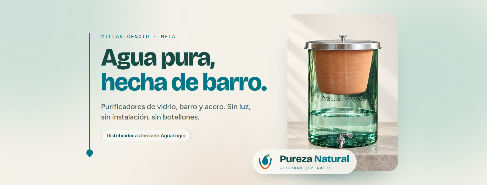

Pureza Natural · Identidad de marca
Las piezas de marca para la fan page y para cualquier formato: el isotipo de siempre con un logotipo en las tipografías de la marca, igual al cierre del logo animado. Ver los reels · Ver el feed · Ver las historias destacadas
1640 × 624. Lo importante queda en la franja central, que es lo que Facebook muestra en celular.

"Pureza" en verde profundo, "Natural" en agua, la línea de agua con su gota y el lema en mayúsculas.
1080 × 1080, pensadas para el recorte en círculo.
9 segundos, vertical, con sonido. Para abrir o cerrar reels y presentar la marca.